来源：https://vow6kdbiak.feishu.cn/docx/KcbNdxvEMoycd4xu7Rjc6UsLngd
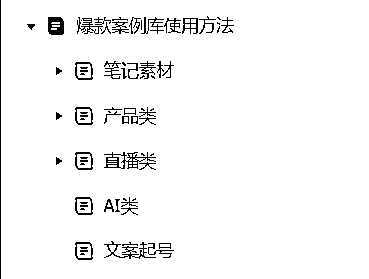
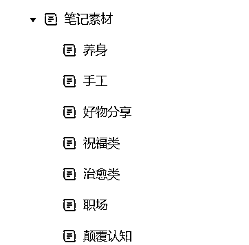
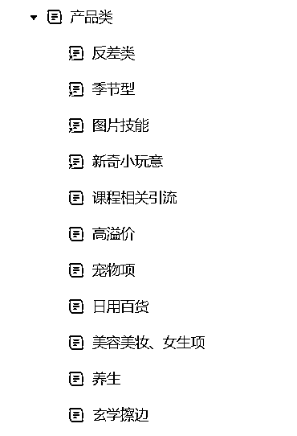
作为专业自媒体人，发现内容、做内容、感知市场和爆款趋势、周期、内容呈现形式，是自由职业自媒体必不可少的能力！但是要收集哪些内容？如何做成自己的知识库是一个时间沉淀过程和素材被发现的过程
永远记住，互联网从不缺素材，缺少的是发现素材的敏感度！而敏感度又是长期互联网冲浪人的直觉和灵感！说到底，还是【长期主义】！
好物分享的混剪是我们刚入自媒体的开始，分享、种草、推荐！这符合我们日常生活！
所以把这个内容制作成了一个分类！后期不管是人物还是直接接挂车变现都是不错的思路！
人物方式出镜的方式千千万，如何找到适合自己的，所以我把看过的素材整理处理啊，有夫妻坐着聊天问答的、有洗碗问答的！这些都是他们呈现的方式！
其中他们可能有自己的人设，比如：
每次出镜只穿同一件衣服的
每次开头都是同样动作的
每个封面都是一样的，花字音乐都是一致的，等等！
所以把人物出镜的方式也同样做了分类：
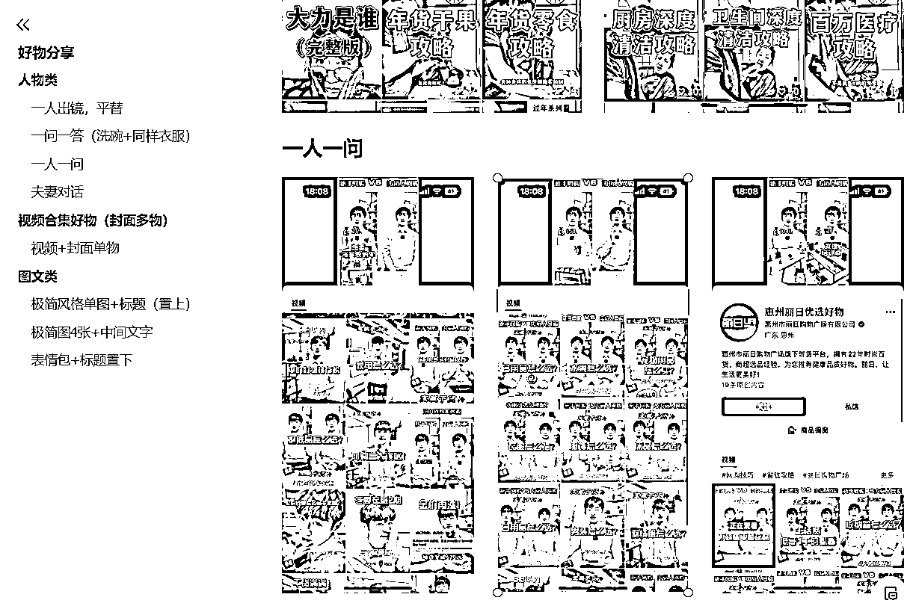
好物分享作为一个大类目，出现的方式很多！但是光是产品也一样要玩出花儿，这才我们说的【独特性】
有哪些方式展现？都是如何展现？我们能学习到什么？你会不会这样做？为什么会？为什么不会？这些都是自己和自己的对话，也帮助我们更好了解自己在自媒体能吃哪碗饭！
所以把能模仿的图文类都分组归纳！单品的、多品4宫格、6宫格、9宫格的；文字的颜色、字体等这样就能一目了然！当然这里素材搜集的内容要按照你的规划做，去找自己喜欢的，能做的，想做的！这样才不会累！当作在刷内容，顺便把爆款素材收集了，多好！
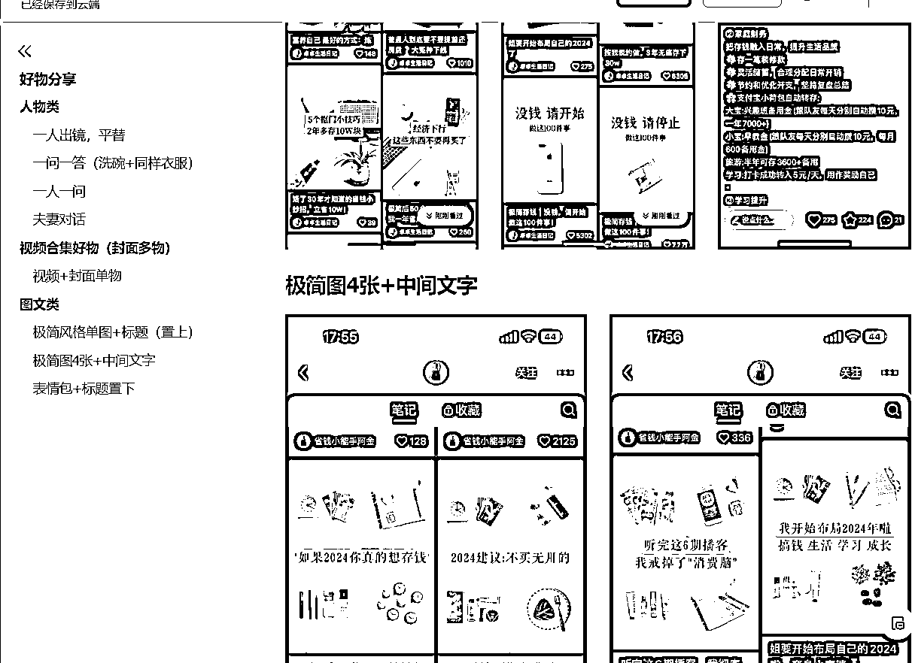
这里主要展示看到的买产品为主的账号，他们是如何运营的，以及卖的产品是什么？
目前的视频号、抖音、小红书，都是以内容带动产品挂车销售或是电商直卖
但是都离不开他们的内容本身！
最好的方式不是自己想破头，而是去模仿他们的内容！因为他们是一个团队，运营有KPI，老板压货压钱，比我们更在意数据和利润！所以直接看他们的就没问题！
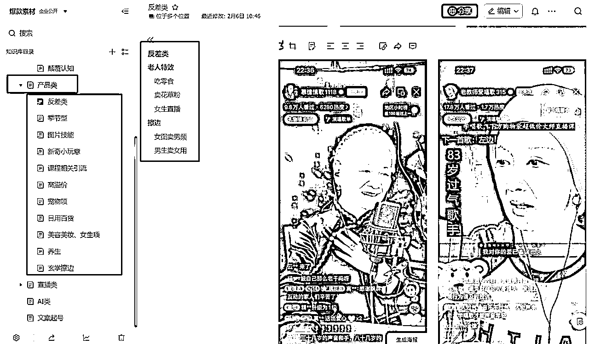
有一些是虚拟产品，做图的、壁纸的等等！
这里的重要性在图片本身是否符合平台调性和用户群体！
我们要做的就是搜集素材、内容，感知爆款，实践、多做、再做，找到自己能【拿下】的方向！
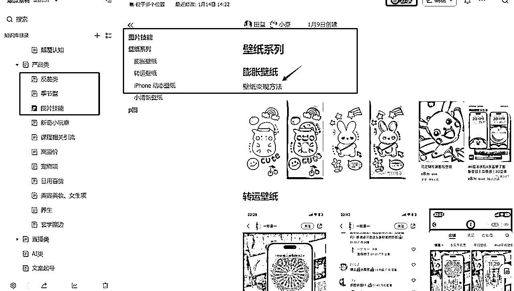
上述给大家举自己的案例，现在我们一起来制作自己的素材库！
如图所示是我的知识库
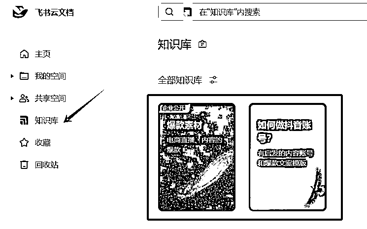
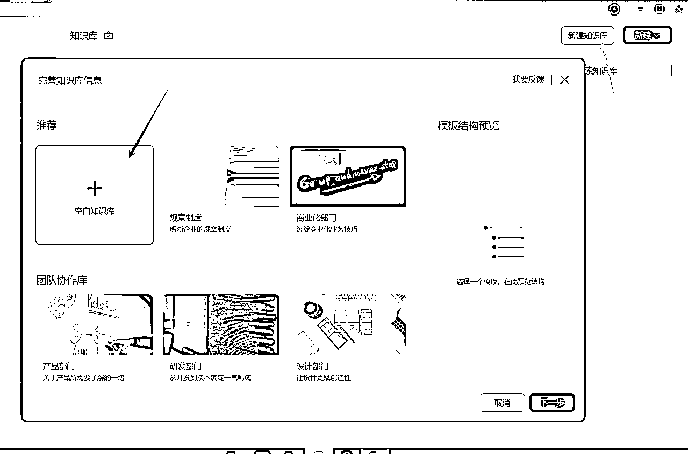
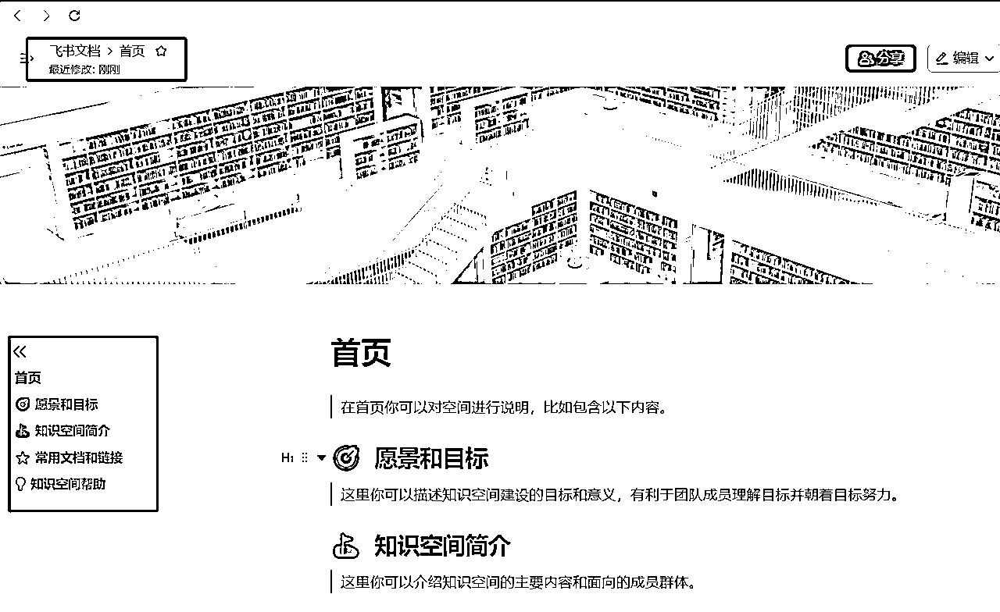
如果在外部文档中已有文档想要迁入【知识库】可以直接添加
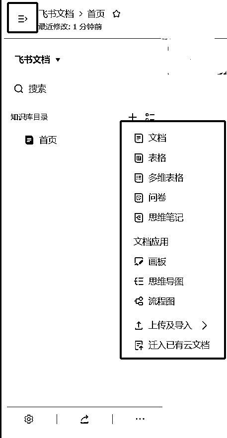
也可在知识库直接添加文档再编写！
如果点击首页添加文档，就是一级分类
从一级分类的文档再点击添加，就是二级分类
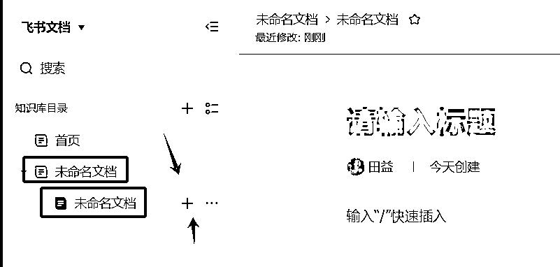
左边是全部一级分类，看大分类
右边是打开了【笔记素材】的一级分类展示的二级分类，能看小分组
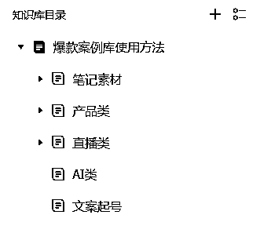
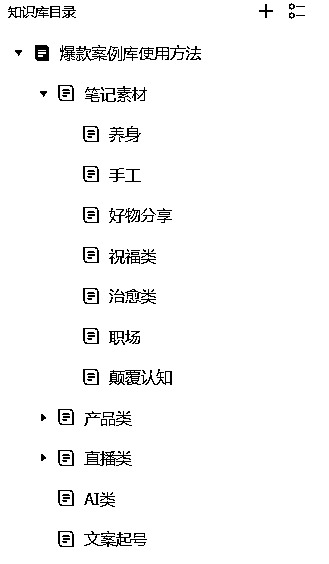
在文档中同样可以快速使用一级、二级标题，错落有致
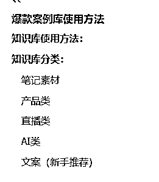
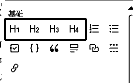
红框左边是写分级标题后的展示
右边是H1-H3的大小
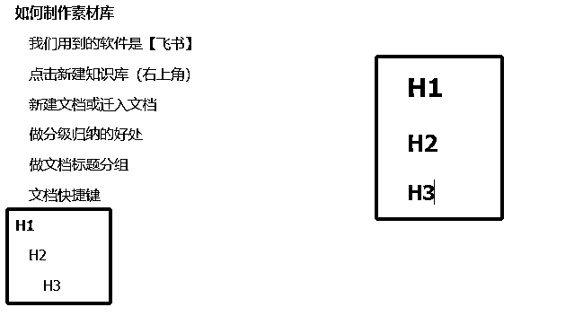
我们每次输入时如果都打开一级、二级分组输入太麻烦
我们可以使用快捷键
这样做内容就更加方便了！
内容分享是快乐的，被盗用和Ctrl+c带走会蓝受，所以大家在分享的时候也别忘了保护自己的文档
在【分享】中有【权限设置】要设置成可管理用户下载、复制哦！
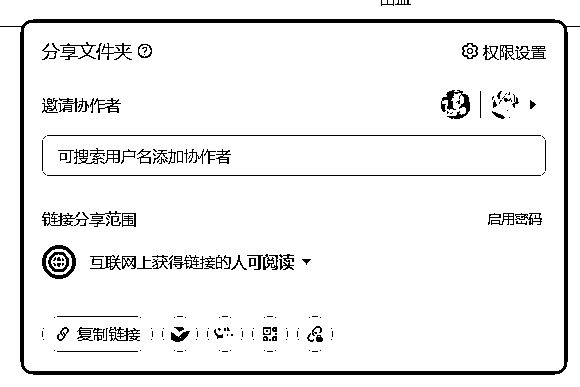
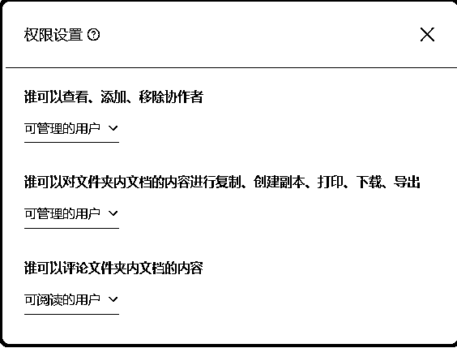
如果每个都要单独设置权限会比较麻烦，所以可以以整个文件夹为单位，直接批量设置！
只要是这个文件夹的所有文件就全部设置好了！
今天内容分享就到这里了，希望大家都能做好自己的素材库哦！如果对你有帮助的话，别忘了点个赞告诉我！我是阿甜，长期和大家分享好用的工具和AI+自媒体新操作！